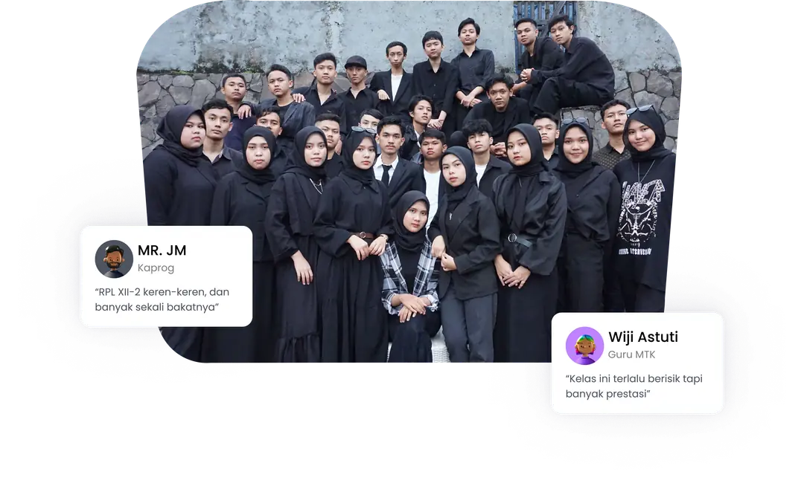
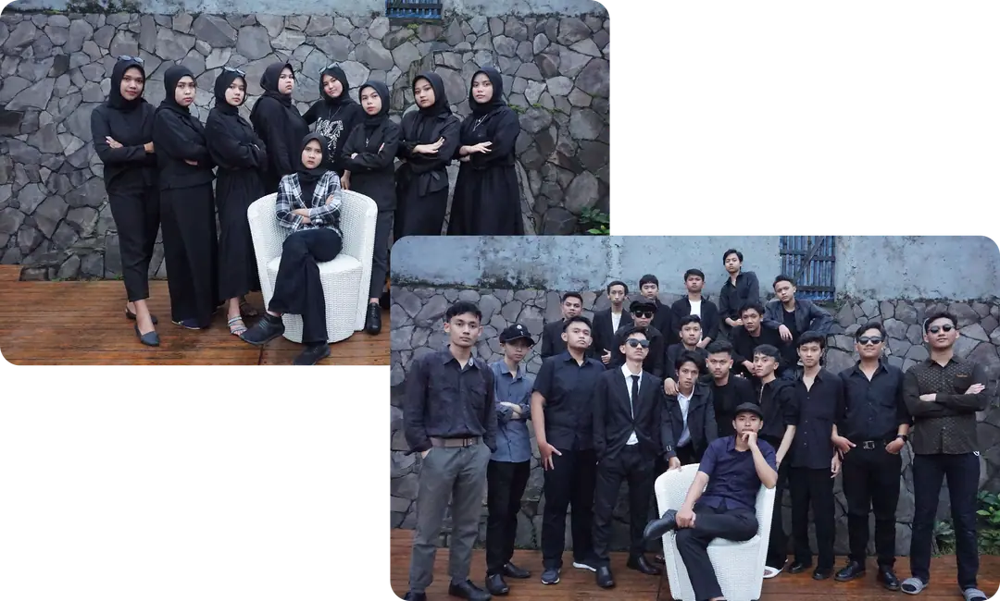

SMK Wikrama Bogor · Gen 17 · 2019–2022
Memorial Album RPL XII-2
Awal mulanya saling asing, kemudian saling asah, saling usung, hingga saling asuh.

Tentang kita
Pemutar YouTube (mode tanpa cookie) baru dimuat setelah kamu menekan putar. Tonton di YouTube ↗
Kita pernah dekat, lekat, hingga hampir tamat.
Awal mulanya saling asing, kemudian saling asah, saling usung, hingga saling asuh. Kita pernah dekat, lekat, hingga hampir tamat. Ini RPL XII-2, jurusan pembangunan berkedok coding. Penghuninya terdiri dari berbagai macam spesies.
Ada yang telah mendaki puncak meniti karir, ada juga yang ingin memilih untuk memakai toga kelak, ada yang hanya berjalan santai namun berproses, dan ada juga yang belum memutuskan untuk membuat arus, masih saja berenang mengikuti. Tak apa, sedari awal dalam diam pun kita berproses. Bedanya lebih lama saja.
Semua jenis spesies itu berpadu-padan menjadi RPL XII-2. Jangan macam-macam, kita punya ketua pemuda pancasila. Hehehe
Featuring
Meet our glorious leader
One of the members of the strongest organization in the world, Pemuda Pancasila.
RPL II membangun
Sepandai-pandainya tupai melompat, akhirnya bakal jatuh juga.
Sejomblo-jomblonya kamu sekarang, akhirnya bakal menikah juga.
Eits, tahan dulu. Kita cari cuan dulu ygy, hehe

Cara terbaik untuk menyimpan rasa adalah mengabadikannya ke dalam sesuatu.
Cara terbaik untuk menyimpan rasa adalah mengabadikannya ke dalam sesuatu. Menaruhnya disana selamanya. Di lembaran bingkai berajut gelak tawa. Ini RPL XII-2, lulus wikrama siap membangun negeri, katanya.
Tapi kami bukan tukang matrial, tak punya bahan untuk membangun negeri. Lebih baik membangun rumah tangga. Sepandai-pandainya tupai melompat, akhirnya bakal jatuh juga. Sejomblo-jomblonya kamu sekarang, akhirnya bakal menikah juga. Eits, tahan dulu. Kita cari cuan dulu ygy, hehe
End credits